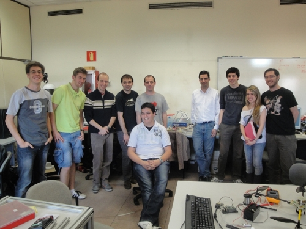

El viernes 15 de Abril tuvimos la primera reunión de los clones.
Fue un reunión informal para ver el estado de mi clon (R2D2) y comprar y cortar las varillas roscadas.


El estado de mi clon es el mostrado en esta foto: Ya están colocadas las varillas de la parte superior y apretadas las tuercas.

Inicialmente la estructura quedó un poco coja: las 4 patas no apoyaban a la vez en el suelo. Así que corté dos trozos de madera de 290mm y 234mm para que las distancias de todos los lados fueran iguales. La estructura mejoró mucho.

Hay más fotos de la reunión en este enlace.